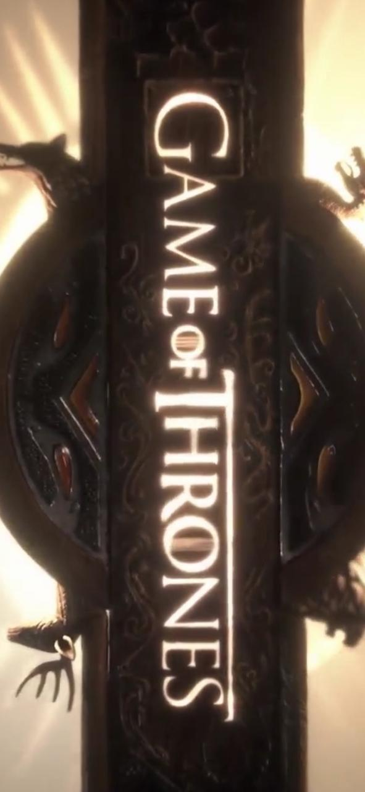
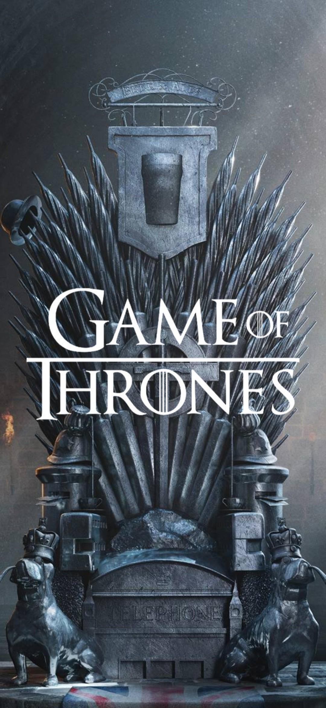
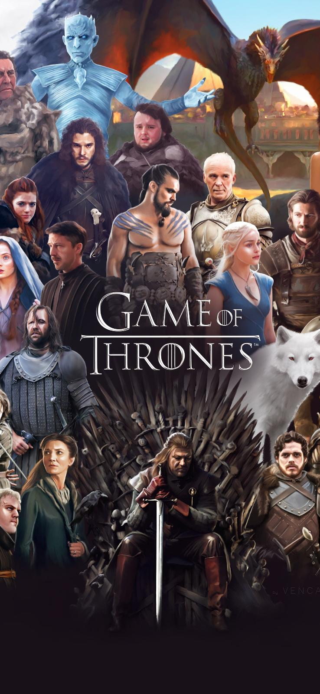
The Game of Thrones by George R.R. Martin A Game of Thrones is set in the Seven Kingdoms of Westeros, a land reminiscent of medieval Europe. Fifteen years prior to the novel, the Seven Kingdoms were torn apart by a civil war, known as the “War of the Usurper." Prince Rhaega Targaryen kidnapped Lyanna Stark angering her family and of her fiancé, Lord Robert Baratheon. here is hardly a person who has not heard about Game of Thrones. This American TV series has conquered the world and attracts audience of different age and preferences. In brief, Game of Thrones is an adaptation of fantasy novels written by G. Martin. The original name of this series is A Song of Ice and Fire. The screen version holds the name of the first novel of this series of books called A Game of Thrones. Game of Thrones was created for HBO and its first episode was launched on April, 2011. Due to professionalism and creativity of two executive producers David Benioff and D. Weiss this TV show has obtained its universal fame.
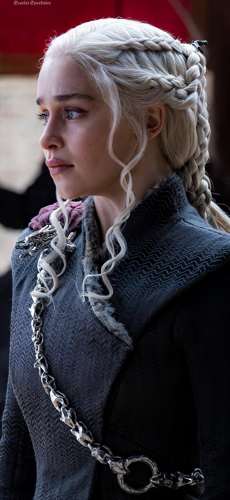
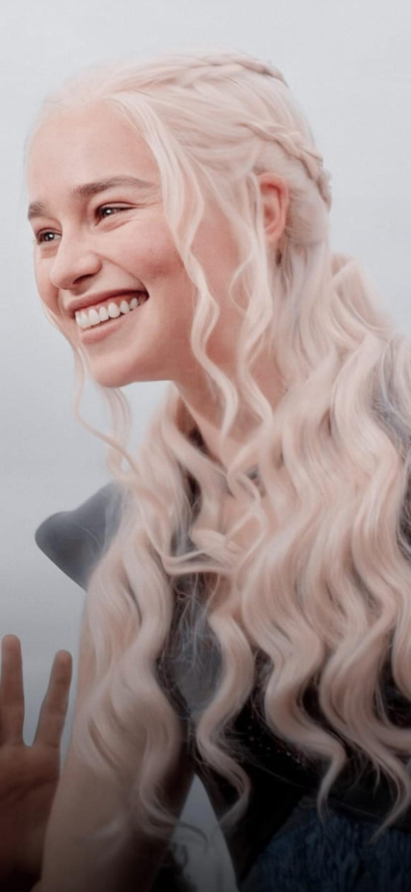
Daenerys Targaryen:
Daenerys Targaryen’s Leadership
Game of Thrones is a fantasy series based on the Wars of the Roses. The Game of Throne’s plot center around the noble families fight for the Iron Throne, threats from supernatural forces, and how the last exiled Targaryen, Daenerys, will retake the Iron Throne. Daenerys Targaryen’s storyline portrays how leadership is learned. Daenerys’s ability to learn how to lead will allow her to successfully take back the Iron Throne.Daenerys’s was born after her father, the “Mad King,” was killed during the Sack of King’s Landing. The last Targaryen’s, Daenerys and Viserys, fled to the Free Cities to live in exile. Growing up she was treated by her brother, Viserys, with malice and contempt. Growing up under these conditions made Daenerys meek and constantly fearful.Viserys sells Daenerys to Khal Drogo for the promise of army to defeat those who took the Iron Throne from …show more content…A slave revolt starts inside the city and allows Daenerys to seize the city.
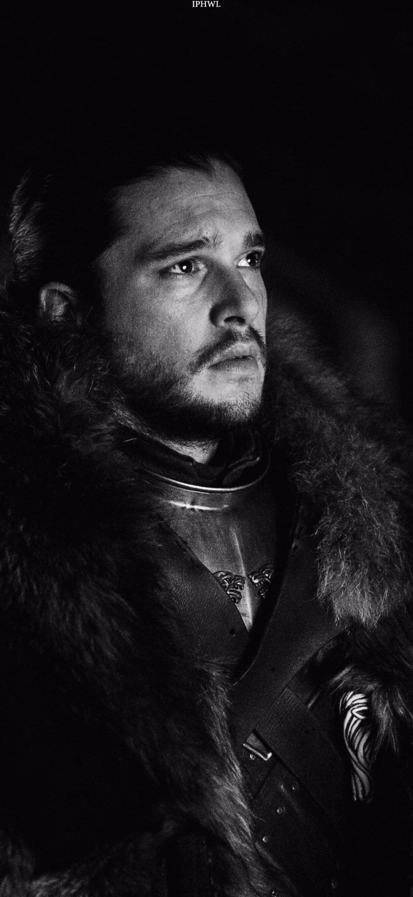
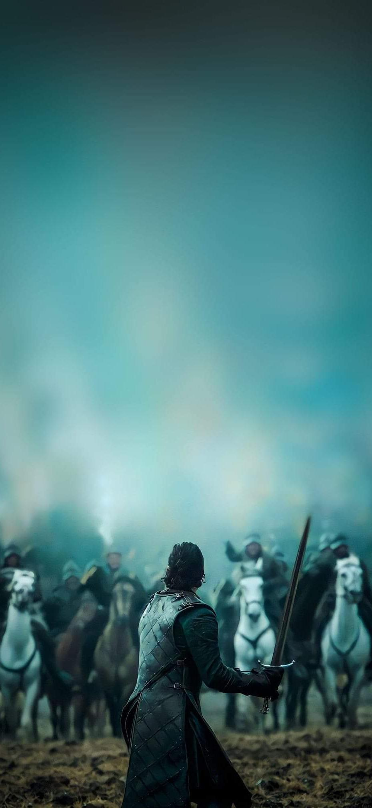
Jon Snow:
Jon snow
begins as something of a permanent outsider, but over the course of the story he finds his place in the Night’s Watch. Because he is not a legitimate son of Ned Stark, he is not fully part of the Stark family. Moreover, because he grew up relatively wealthy and educated, he is considered privileged and different by the other new recruits of the Night’s Watch. As a result, however, Jon is very independent and knows how to fend for himself, traits that ultimately allow him to feel assured enough to differ from his peers when he feels they are in the wrong. Much like Ned and Robb, Jon is surprised responsibilities thrust upon him as he becomes a leader among the new recruits at the Wall. Unlike his family, Jon has earned these responsibilities rather than received them as a result of his noble heritage. Jon leads without pride and without thought for himself, and he proves a wise and natural leader from the start of the novel. His argument and self-deprecation persuade Ned to spare the he persuades his friends and Maester Aemon.
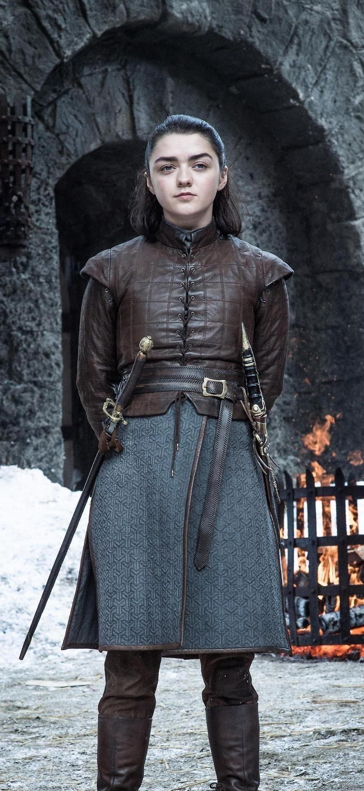
Arya stark:
Arya Stark is the daughter of Lord Eddard Stark and Lady Catelyn Tully in the books the Game of Thrones. She is the third child and second daughter in the family. Her brothers include Robb, Bran and Rickon as well as a half brother Jon Snow. She is the older sister to Sansa Stark. In the beginning of the books, she is about 9 years old. Arya’s older brothers, Robb and Jon, find six direwolf puppies and each of the children adopts one of them. A direwolf is much like a wolf in the story but said to be much large and more dangerous. Arya loved her direwolf very much and ends up naming her Nymeria after a legendary warrior queen. Arya and her sister, Sansa, travel with their father to King’s Landing when he is made Hand of the King All of the children, except for the two youngest, are learning where they fit into an expanding social world. Arya, for example, is just now developing a sense of confidence and also a pride in her abilities, especially with a sword. Arya is able to develop in this stage due to the support and understanding of her father. At one point in the story, while Arya is at King’s Landing, her father finds the sword that was given to her by her half-brother Jon Snow. Arya’s father tells her that he should take the sword away from her, but due to recent dangers within the castle, he allows her to keep the sword and arranges for a Master of sword to teach her how to use it. This action by her father allowed her to build a strong sense of her own self, as well as, pride in her own abilities.
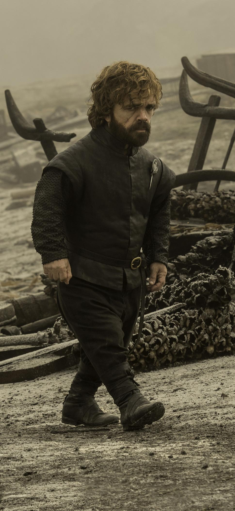
Tyrion Lannister:
Tyrion is perhaps most notable for being a little person, but though his height does not give him the best physical vantage point, Tyrion’s mismatched black and green eyes do not miss much. He is, perhaps, the smartest character in the novel (and is certainly at least the wittiest). He devises a way to escape the Eyrie, for instance, though it seemed impossible to do so. Tyrion also sees hard truths, and he is bluntly honest with himself, acknowledging how others see him because of his physical appearance, and with others as well, whether he is confessing his petty crimes before Lysa or giving Joff, Jon, or Tywin his advice. He has a gift for determining other people’s motives, and he may have more in common with the legendary Lannister family progenitor, Lann the Clever, than any of the rest of his family. Tyrion knows when someone can be bought, as with the mountain clans, and when someone cannot be bargained with, as with the Starks after Joff kills Ned. Moreover, Tyrion’s dual-colored eyes are something of a metaphor for the book’s multiple perspectives, since Tyrion can see things both ways. As such, he is somewhat morally ambiguous to the reader, and though Tyrion always proclaims his love for his family, he doesn’t forgive their flaws either. Consequently, even Jaime wonders whose side Tyrion is on.
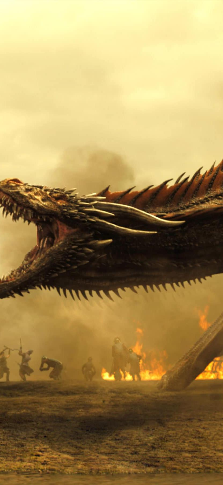
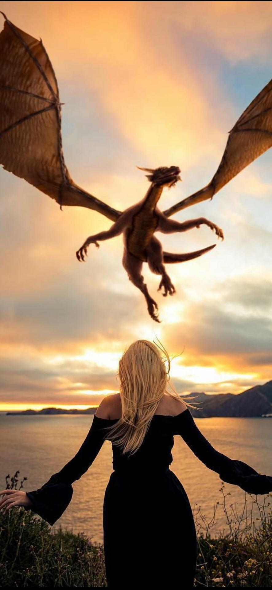
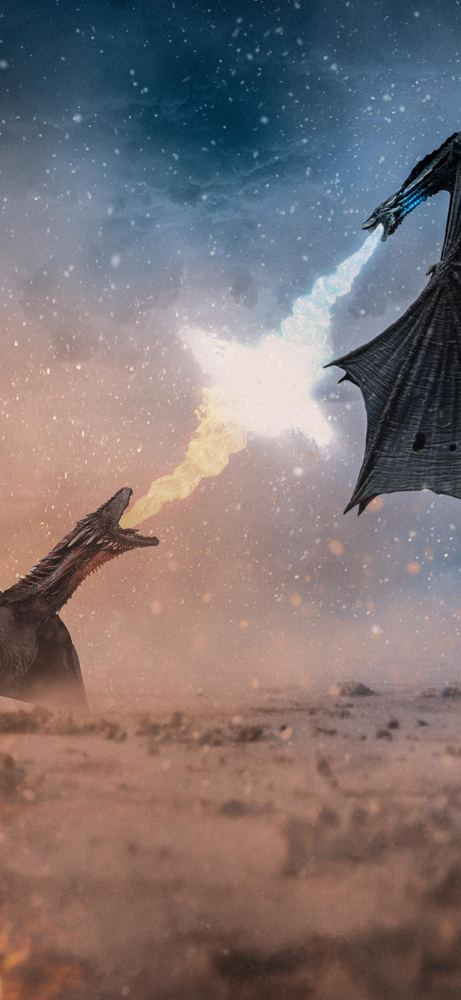
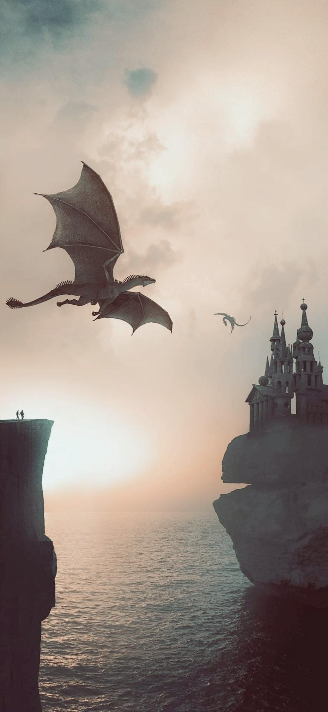